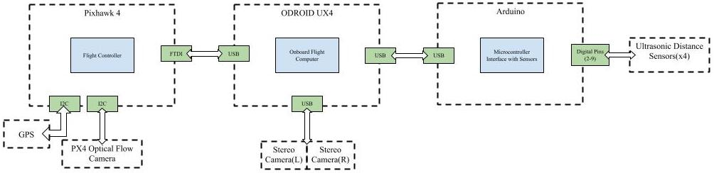
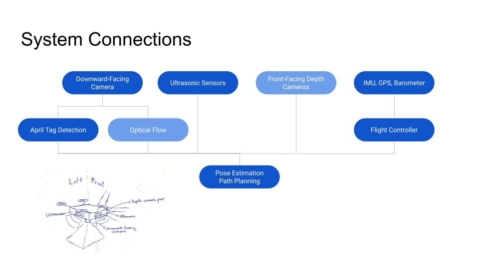
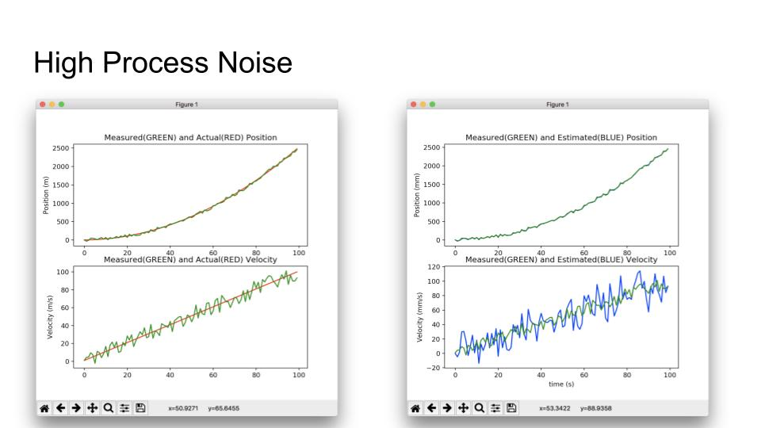
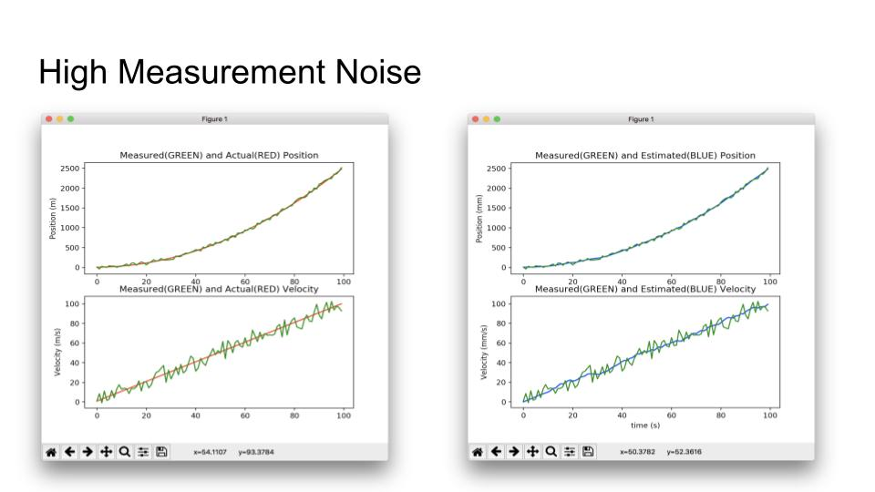
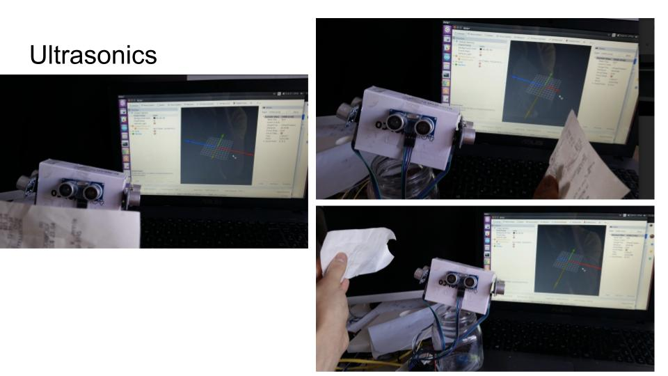
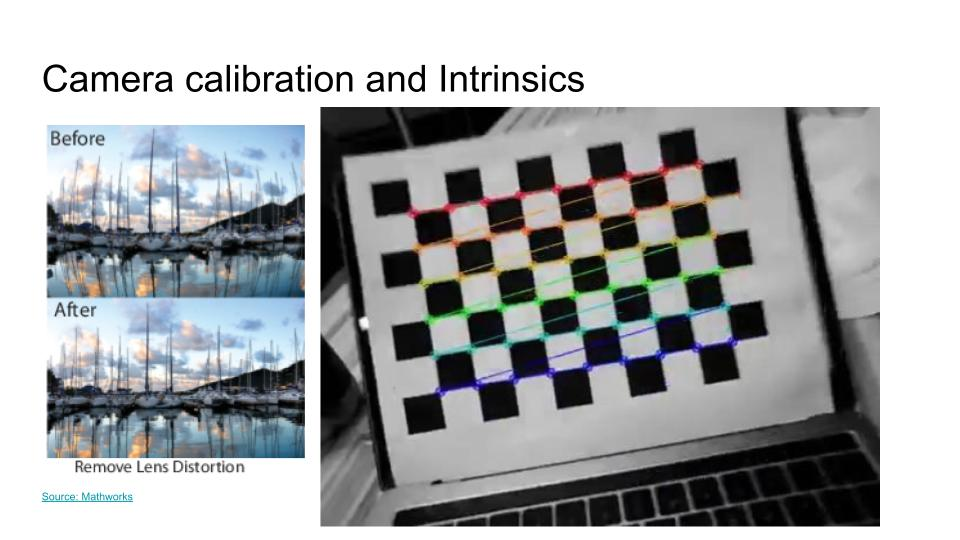

Materials funded by CMU's SRC-URO program
Summary
To learn ROS and transformation matrices, I developed an autonomous target-search drone under the mentorship of Professor George Kantor this spring 2019 semester. This also was my first real experience with software for robotics! I implemented a Kalman Filter to smooth out noisy position data from April Tag based localization. Robots need to track their pose(position and orientation) to safely interact with their environment. I realized early on that my drone would lose access to GPS indoors, and decided to use April Tags to provide pose for testing.
System Architecture
  The above diagrams show how different processes interact at different levels of abstraction.Experiments with Measurement and Process Noise
At the fundamental level, the Kalman Filter weighs between raw, measured data and data predicted by some linear equations. This noise weight can be thought of as "distrust", so higher noise weight assigned to measurements means we do not trust the measurements.
 The above left plot compares the (red) true velocity and position of a simple 1D linear function to the (green) noisy, measured versions. Notice that there is significant noise in the measured data compared to the true data. In this experiment, however, we assign higher noise weight to the process, meaning we trust the linear system dynamics less and trust the measurements more. This is the wrong choice for scenario, which is why on the right plot, the blue estimated position more oscillatory than the originally-measured data. The experiment above demonstrates the opposite: we assign higher noise weight to measurements, meaning we distrust the measurements. This is the right choice, and overall leads to much more accurate position predictions.
Visualizing Ultrasonic Sensor Data in ROS
In this project, I learned a lot about ROS and how to unify hardware and software into one system. In the above picture, I am visualizing raw ultrasonic sensor data collected by an Arduino on ROS Rviz.
Camera Calibration and Intrinsics
In this project, I also learned about camera calibration as an essential step when images are used for precise calculations. I used the standard checkerboard with OpenCV to perform the intrinsic calibration.
Results
The video above shows noisy position data(green) and the smoothed out data(red). The red plot still has major spikes, and could be smoothed with higher measurement noise weight. The original video can be found here.Alvin Shek
Robotics Masters Student @ CMU
Robotics, Computer Vision, Deep Learning, Reinforcement Learning.